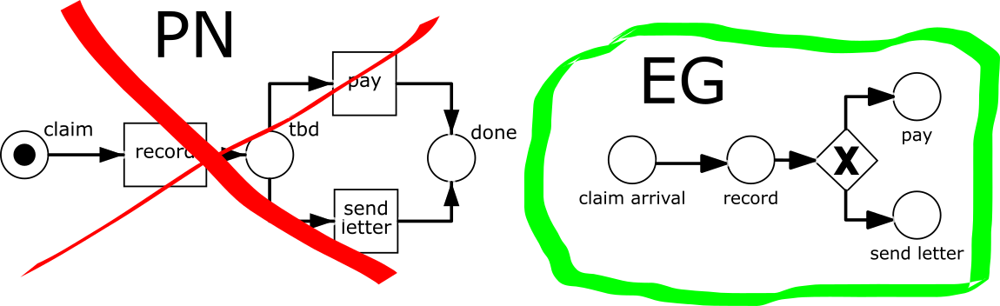
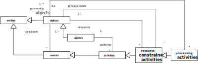

This tutorial is based on the Open Access book Business Process Modeling and Simulation with DPMN, available from https://sim4edu.com/reading/bpms-dpmn/
DPMN = Discrete Event Process Modeling Notation
... is a diagram language for modeling discrete processes, including business processes.
It combines the intuitive flowchart modeling style of BPMN (the Business Process Modeling Notation) with the rigorous semantics provided by
Part III: DPMN with Resource-Constrained Activities
Part IV: DPMN with Processing Activities
Outlook
Issues inBP Modelingand Simulation
resourcecardinality constraints
multitaskingconstraints
task priorities
activity preemption
Issues in BP Modeling
Using a simplistic concept of BPs due to a focus on administrative workflows (as in Banking, Insurance, etc.),
neglecting:
passive resources such as equipment, rooms, vehicles, etc. (as in Health Care, Manufacturing, etc.)
resource cardinality constraints
multitasking constraints
resource modeling concepts such as alternate resource pools, task priorities, activity preemption, etc.
Unnatural semantics of BP models (by translating them to various types of Petri Nets)
Resource Cardinality and Multitasking Constraints 1:1
Resource cardinality constraint: an examination involves exactly one doctor.
Multitasking constraint: a doctor performs at most one examination activity (at the same time).
Resource Cardinality and Multitasking Constraints M:N
Resource cardinality constraint: teaching a course involves at least one and at most two teachers.
Multitasking constraint: a teacher is involved in at most seven course teaching activities (at the same time).
Unnatural Semantics of BP Models

It has been an unfortunate choice in the history of BPM to view business process models as Petri Nets.
Mapping business process models to Petri Nets, instead of Event Graphs, is like mapping
SQL queries to C code instead of predicate logic formulas, for obtaining their semantics.
Issues in BP(MN) Simulation
Using a simplistic concept of BP simulation models:
e.g., modeling decisions in an abstract manner with probabilistic branching,
instead of conditions that are based on attribute values.
Not learning from Discrete Event Simulation (DES), where discrete processes,
including BPs, have been modeled for many years before BPM.
Not Learning from DES
No consideration of: alternate resource pools,task priorities,activity preemption.
As opposed to DES, BPM has a limited concept of "business processes" as isolated "cases".
BPMN
The Business Process Modeling Notation (BPMN) does not support simulation.
However, BPMN models can be turned into limited forms of simulation models by...
adding probability distributions for the rate of incoming "cases" and for activity durations,
assigning probabilities to the outgoing branches of decision nodes,
defining human resources and assigning them to performer pools.
Artificial/ad-hoc "token flow" semantics (instead of Event Graph semantics)
No conditional, but only probabilistic, branching
Only one performer resource per activity (a BPMN swimlane)
No alternate resource pools, no task priorities, no activity preemption
What's Wrong with BPMN?
Overloading/ambiguity of sequence flow arrows
Insufficient integration of the objects that participate in a process
Insufficient resource modeling
No support of processing activities
No convincing formal/operational semantics: according to its (not mandatory) "execution semantics",
an activity is started by incoming "tokens" and available "data InputSets"(!)
What's Good about DPMN?
It has an ontologically well-founded formal semantics based on Event Graphs (Schruben 1983)
It integrates the objects that participate in a process
It allows general forms of declarative resource modeling for resource-constrained activities with
resource roles, pools and constraints
It allows modeling processing activities in Processing Networks
Ontological Considerations
Based on common sense and on the
Unified Foundational Ontology (UFO)
objects
events
causal regularities
activities
Objects and Events
(1) Objects ("endurants") and events ("perdurants") are the two most fundamental ontological categories.
(2) Objects participate in events.
(3) Events need not be atomic, nor instantaneous. They may be composite and have non-zero duration.
For instance, a soccer match is a composite event that has a duration of 90 minutes.
Causal Regularities
Events, under certain conditions on the state of their participating objects, cause state changes of affected objects and follow-up events.
Activities
... are composite events that are composed of a start event and an end event.
... have a performer, which is an agent.
Resource Constrained Activities
In a BP, a performer is a resource.
Processing Activities

Processing activities are performed at processing stations, such that processing objects
move from one processing station to the next one.
Two Kinds of Business Processes
Activity Networks
with a flow of events
with queues of planned activities
⇒ BPMN-style business processes
Processing Networks
with a flow of processing objects and a flow of events
with queues of processing objects
generalizing the Queuing Networks of Operations Research
⇒ GPSS/SIMAN/Arena-style business processes
Discrete Dynamic Systems
... are real-world systems consisting of objects, the state of which is changed by a
discrete flow of events;
... can be viewed as state transition systems where events correspond to
transitions that change the state of objects.
An Example of a Discrete Dynamic Systems
We consider a service station as a system characterized by the following narrative:
Customers arrive at a service desk at random times.
If there is no other customer in front of them, and the service desk is available,
they are served immediately, otherwise they have to queue up in a waiting line.
The duration of services varies, depending on the individual case.
When a service is completed, the customer departs and the next customer is served, if there is still any customer in the queue.
Objects: customers, the service desk.
Events: arrivals, service starts, service ends.
Discrete Processes
... are governed by causal regularities, which relate events with (1) state changes of affected objects and (2) follow-up events.
A discrete process consists of a partially ordered set of events.
... have been proposed for ES modeling by Schruben in 1983.
The integer variable Q denotes the length of the queue. The Boolean variable B denotes the busy/available status of the service station.
Strengths and Weaknesses of Event Graphs
Strengths:
They provide an intuitive visual modeling language.
They capture the fundamental ES paradigm.
Weaknesses:
They lack a visual notation for (conditional and parallel) branching.
They do not support OO state structure modeling (with objects/classes and attributes).
They do not support activities.
Object Event Modeling and Simulation (OEM&S)
Since events depend on objects (as their participants), we first need to model object types and then event types.
A process model is based on an underlying information model defining the types of its objects and events.
A conceptual process model describes the causal regularities of a real world process.
A process design model defines event rules that capture causal regularities.
Simulation Design in OEM&S
A simulation design model consists of
an information design model defining object types and event types, e.g., in the form of classes in a UML Class Diagram, such as in an Object Event (OE) Class Diagram.
a process design model defining event rules that represent causal regularities, e.g., in a DPMN Process Diagram.
A simulation design model is a computationally complete specification that can be directly implemented.
Activity-Based Modelingof Discrete Processes
The Layers of DPMN (1)
Layer
Concepts
Diagrams
Event-Based Simulation
Event Graphs (Schruben 1983)
Events, Event Scheduling Arrows, Assignments
Object Event Simulation
Object Event Graphs (Basic DPMN)
+ Objects w/ State Changes
DPMN with Resource-Constrained Activities
Activities
Resource-Dependent Activity Scheduling Arrows
Resource Roles
Resource Multiplicity Constraints
Resource Pools
The Layers of DPMN (2)
Layer
Concepts
Diagrams
DPMN with Resource-Constrained Activities
Activities
Resource Roles
Resource Multiplicity Constraints
Resource Pools
Resource-Dependent Activity Scheduling Arrows
DPMN with Processing Activities
Processing Activities
Entry/Processing/Exit Nodes
Processing Flow Arrows
Pizza-Server-1 OE Class Design Model
«rv» = random variable
Pizza-Server-1 DPMN Process Design Model
Exercise 1: Download/Run the Pizza-Server-1 Model
Download the OES Pizza-Server-1 model and extract the ZIP archive file
in a suitable folder (e.g., in "C:\" or in "C:\simulators"). An "OES" subfolder will be created.
Run the Pizza-Server-1 model by pursuing the following steps
Go to the folder OES\js\Core2\Pizza-Server-1.
Open the index.html file in your browser.
Click the button.
Take a look at the resulting statistics output.
If there is anything you'd like to get an explanation for, post your questions on the Chat.
Part III: DPMN with Resource-Constrained Activities
Pizza-Server-2 Design Model
Using a Resource-Dependent Activity Start Arrow
Pizza-Server-1 versus Pizza-Server-2
Exercise 2: Run the Pizza-Server-2 Model
Run the Pizza-Server-2 model by pursuing the following steps
Go to the folder OES\js\Core2\Pizza-Server-2.
Open the index.html file in your browser.
Click the button.
Take a look at the resulting statistics output.
If there is anything you'd like to get an explanation for, post your questions on the Chat.
The Make-and-Deliver-Pizza Model
A pizza service company takes phone orders
for making and delivering pizzas,
with the help of order takers, pizza makers, ovens and a crew of pizza delivery scooter drivers.